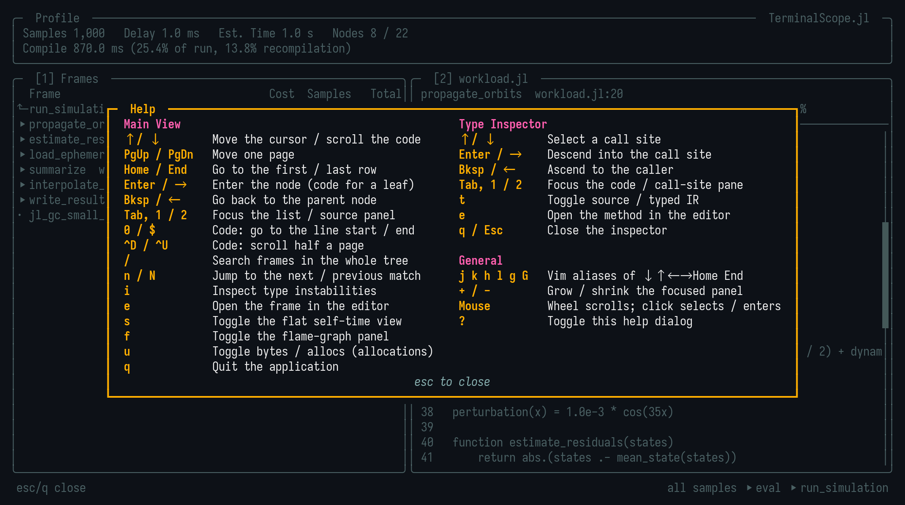
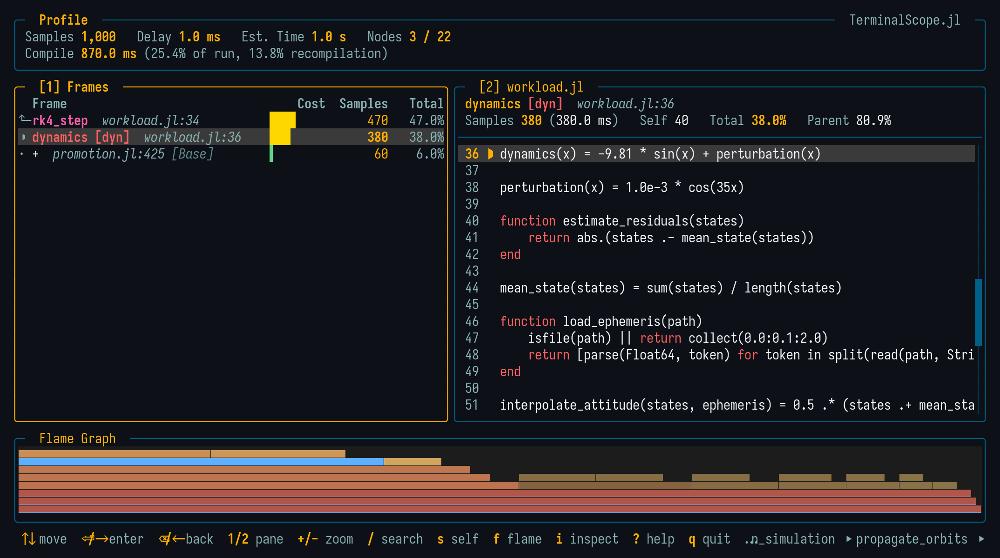
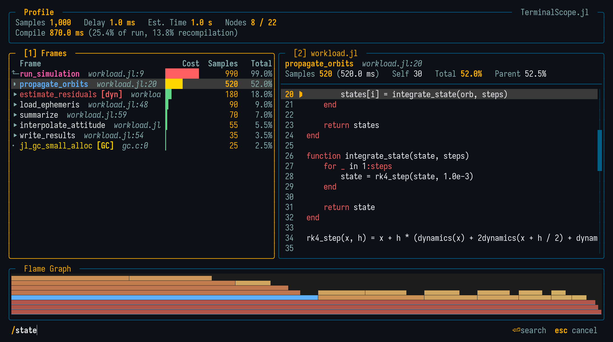
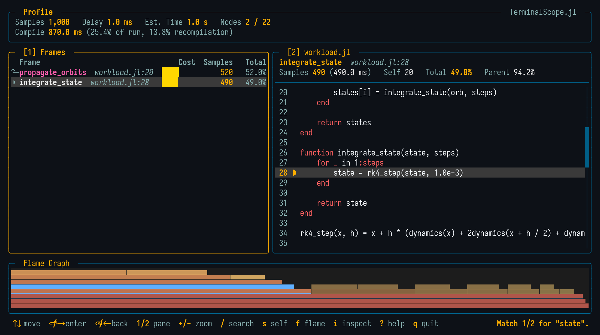
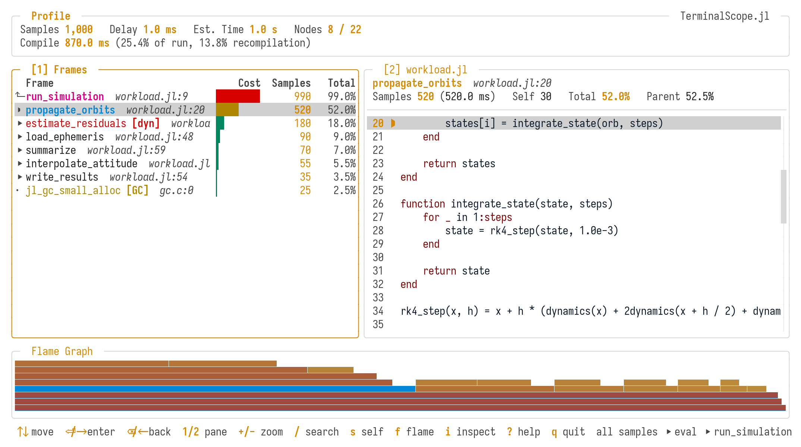

Navigation and Themes
The Main View
Every profile viewer shares the same layout: the frame list on the left and the source panel on the right, updated live while navigating.
[1] Frames: One level of the tree at a time — the current node as a pinned parent row (⬑) followed by its children, sorted by cost. Entering a node auto-descends through single-child chains until the next branching point, and going back inverts the auto-descent in one key press.[2] Source: A compact information strip (name, tags, costs, and method signature) above the syntax-highlighted source of the selected row, with the frame line marked with▶.- Flame Graph: On terminals supporting a graphics protocol (Kitty graphics or Sixel), a flame graph of the whole profile is drawn along the bottom of the screen (see Flame Graph).
The panels are numbered like in LazyGit: the number keys jump straight to a panel, and the movement keys act on the focused one.
| Keys | Action |
|---|---|
↑ / ↓ | Move the cursor (list) or scroll the code (source panel) |
j k h l g G | Vim-style aliases of ↓ ↑ ← → Home End |
PgUp / PgDn | Move or scroll one page |
Home / End | Go to the first / last row, or the top / bottom of the code |
Enter / → | Enter the node; on a leaf, focus the source panel |
Bksp / ← | Go back to the parent node |
Tab, 1 / 2 | Switch or jump the panel focus |
+ / - | Maximize / restore the focused panel |
0 / $ | Source panel: go to the line start / end |
^D / ^U | Source panel: scroll half a page |
/ | Search frames in the whole tree (case-insensitive regex) |
n / N | Jump to the next / previous search match |
s | Toggle the flat self-time view |
f | Toggle the flame-graph panel (graphics terminals) |
e | Open the selected frame in the editor |
i | Inspect the selected frame for type instabilities |
u | Allocations: toggle between bytes and allocation counts |
? | Toggle the help dialog |
q | Quit |
The status bar always shows the most important bindings of the active view, and the ? dialog lists all of them:

Mouse
The mouse is supported as well: the wheel scrolls the panel under the cursor — moving the selection in the lists and the view in the code panes — and a left click focuses the clicked panel, moving the selection to the clicked row. Clicking the selected row again enters it, and a click closes the help dialog.
Over the flame-graph panel, a click selects the clicked frame rectangle in the frame list — and clicking the selected rectangle again enters it — while the wheel ascends and descends the tree.
Flame Graph
When the terminal supports a graphics protocol — Kitty graphics (Kitty, Ghostty) or Sixel (WezTerm, iTerm2, foot, mlterm) — the runtime, allocation, and inference viewers draw a flame graph of the whole profile along the bottom of the screen: the root at the bottom, the call stacks growing upward, and each frame's width proportional to its inclusive cost.

The colors carry the measurements and the navigation state:
- Each frame is heat-colored by its share of the total cost, on a muted ramp from sand (cheap) through amber to brick red (hot), adapted to the dark and light themes.
- The row selected in the frame list is filled with the theme primary color (cyan), so the flame graph always shows where the selection sits in the global picture.
- The path from the root to the current drill-down level is drawn at full heat with a bright line along its lower edge, and the current subtree keeps its full heat, while the rest of the tree is dimmed toward the background.
When the tree is deeper than the panel fits, a dashed strip along the top edge signals the truncated levels. The f key hides and restores the panel, and it disappears automatically while a panel is maximized with +. On terminals without graphics support, the panel is hidden entirely and the viewers keep the two-panel layout.
Flat Self-Time View
The frame list ranks frames by their inclusive cost while drilling down. Pressing s switches it to a flat list of the hottest frames of the whole tree ranked by their aggregated self cost — the cost spent in the frame itself, excluding its callees — which is the classic way to find the hot leaf functions of a profile.
Occurrences of the same frame (same function, file, and line) anywhere in the tree merge into one row. Enter jumps back into the tree view at the hottest occurrence of the selected row, and s or Backspace return to the saved tree position. In the allocation viewer, the costs of the synthetic allocated-type leaves are charged to the allocating call site, so the flat view answers "which line of my code allocates"; the u unit toggle re-ranks the flat rows in place. The invalidations viewer has no flat view, since its counts are not a cost distribution.
Jump to Editor
Pressing e opens the selected frame — or, inside the type inspector, the inspected method — in the user's editor at the exact file and line, suspending the interface while the editor runs and restoring it afterwards. The editor is resolved like Base.edit, from $JULIA_EDITOR, $VISUAL, or $EDITOR. Editors that return immediately (e.g. GUI editors like VS Code) bring the viewer right back while the file opens in the background.
Frame Search
Pressing / opens a search prompt in the status bar, styled after the Neovim command line:

Confirming with Enter collects every frame of the whole profile tree whose name or source location matches the query and navigates the viewer to the first match — descending or ascending levels as needed, with the cursor placed on the matching row. The query is a case-insensitive regular expression, so ^step!$ matches a frame name exactly and solve|integrate matches either name; a query that is not a valid pattern (e.g. an unbalanced [) falls back to a plain case-insensitive substring match. n and N then cycle through the matches, wrapping around, while the status bar reports the current position:

Esc cancels the prompt without searching, and Backspace edits the query while it is open. Since the search covers the entire tree, it is the fastest way to answer "where is my function in this profile" without descending manually.
Themes
The viewers ship with a dark and a light theme, matching the SatelliteAnalysis.jl presentation palette: navy structure, amber chrome, cyan data emphasis, and magenta secondary emphasis.
The default variant is :dark. It can be changed for the session:
TerminalScope.theme!(:light)or per invocation, since every function entry point accepts a theme keyword:
scope_profile(g; theme = :light)
Customizing the Colors
Every color of both variants can be overridden through Preferences.jl:
# Colors accept an xterm-256 code (0-255) or a hex string (quantized to xterm-256).
TerminalScope.set_theme_color!(:dark, :accent, "#38BDF8")
TerminalScope.set_theme_color!(:light, :bg, 255)
# The :selection slot is the background of the row under the cursor.
TerminalScope.set_theme_color!(:dark, :selection, 236)
# Restore the default palette of both variants.
TerminalScope.reset_theme_colors!()The available slots are :bg, :border, :border_focus, :text, :text_dim, :text_bright, :primary, :secondary, :accent, :success, :warning, :error, :title, and :selection. The overrides are stored in the LocalPreferences.toml file of the active project and take effect after restarting Julia.
Reference
TerminalScope.theme! — Function
theme!(variant::Symbol) -> SymbolSet the default theme variant of the TerminalScope viewers to variant, either :dark or :light, and return it. Every entry point also accepts a theme keyword overriding this default for one invocation.
TerminalScope.set_theme_color! — Function
set_theme_color!(
variant::Symbol,
slot::Symbol,
color::Union{Integer, AbstractString}
) -> NothingPersist color as the color of the theme slot of variant using Preferences.jl, overriding the default of THEME_DEFAULTS. The change is written to the LocalPreferences.toml file of the active project and takes effect after restarting Julia. The function throws when the variant, slot, or color is invalid.
Arguments
variant::Symbol: Theme variant, either:darkor:light.slot::Symbol: Color slot, one ofTHEME_SLOTS—:bg,:border,:border_focus,:text,:text_dim,:text_bright,:primary,:secondary,:accent,:success,:warning,:error, or:title— or:selection, the background of the row under the cursor.color::Union{Integer, AbstractString}: Color as an xterm-256 code (0-255) or a hex string like"#F59E0B", which is quantized to the closest xterm-256 color.
Extended help
Throws
ArgumentError: The variant is not:darkor:light, the slot is not one ofTHEME_SLOTS, or the color is neither a code in 0-255 nor a"#RRGGBB"string.
Examples
julia> TerminalScope.set_theme_color!(:dark, :accent, "#38BDF8")
julia> TerminalScope.set_theme_color!(:light, :bg, 255)TerminalScope.reset_theme_colors! — Function
reset_theme_colors!() -> NothingDelete every theme color preference of both variants, restoring the default colors of THEME_DEFAULTS after restarting Julia.
TerminalScope.THEME_SLOTS — Constant
THEME_SLOTSColor slots of a TerminalScope theme, in the order of the Tachikoma.Theme constructor. Each slot of each variant can be overridden with a Preferences.jl preference named "<variant>_<slot>", e.g. "dark_bg" (see set_theme_color!).
TerminalScope.THEME_DEFAULTS — Constant
THEME_DEFAULTSDefault xterm-256 color codes of the THEME_SLOTS of the :dark and :light theme variants, matching the SatelliteAnalysis.jl presentation palette: navy structure, amber chrome (titles, costs, focus), cyan data emphasis, and magenta secondary emphasis, quantized to the closest xterm-256 colors. The light variant uses a white surface with the accents darkened for contrast as in the original.
TerminalScope.SELECTION_DEFAULTS — Constant
SELECTION_DEFAULTSDefault xterm-256 color codes of the :selection slot of the :dark and :light theme variants: the background used to highlight the row under the cursor. The slot lives outside Tachikoma.Theme, which has no selection color, but is overridden through the same preference mechanism as the THEME_SLOTS (see set_theme_color!).